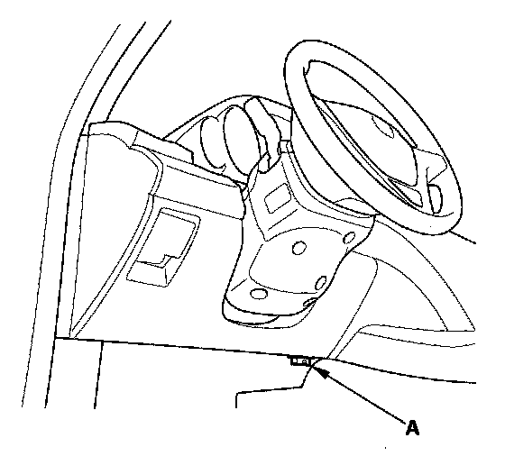

Checking Seat Weight Sensors After A Vehicle Collision
Checking Seat Weight Sensors After a Vehicle Collision1. Position the front passenger's seat to the rear most position, adjust the recliner to the most forward position. Do not move it from this position.
2. Drive the vehicle, accelerate to 20 mph (36 km/h), then stop on level ground.

3. Connect the HDS to the data link connector (DLC) (A).
4. From the SRS inspection menu, select Seat Weight Sensor, then Misc test, then "SEAT OUTPUT CHK" and follow the prompts until the ODS operation check has been completed.